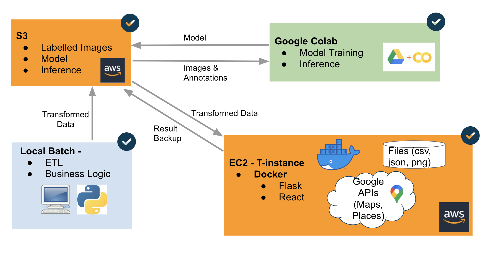

PROBLEM STATEMENT
Problem 1: Street-level Accessibility
According to US Census (2010), 30.6 million individual have physical disabilities. Among these, nearly half are using an assistive aid such as wheelchair (3.6 million) or a cane, crutches, or walker (11.6 million). Many cities streets, sidewalks, and businesses in the US remain inaccessible. It is undoubtful that sidewalk accessibility fundamentally affects where and how people travel in cities. Only few, if any, mechanisms are used to determin the accessible areas of a city needs. Based on the survey from Ntational Council of Disability, people couldn't find comprehensive information on the "degree to which sidewalks are accessible" across the U.S. Tranditionally, the sidewalk accessment was conducted via in-person street audits or via citizen call-in reports which is labor intensive and costly.
Problem 2: Accessible Parking is not Easy to Find
Based on the survey conducted by Accessible Parking Coalition, 69% of people with disabilities have prolems finding accessible parking in their communities. 96% say parking availability is important to leading an independent life. 70% say their decision to drive or ride is influenced by parking availablity. 62% would like to drive or ride if parking was more available. 52% have decided not to make a trip because of concerns about finding parking. Clearly, accessible parking create a problem for disabled people. There is no clear method to identigy accessible parking on a map easily (even Google map doesn't provide this functionality).MISSION STATEMENT
OUR MISSION - help people with physical disabilities reduce street-level accessibility problems and find handicap parking easily.
For our prototype, we choose Denver as pilot city to deploy our prodcut as one of our group members resides in Denver and hence facilitate the prototype user test.
GATHER DATA
We used ArcGIS Pro to get various street location as points with latitude and longitude. After that, we use Google Static Streetview API to download google streetview images with resolution of 640x640. For model model train/test, Denver downtown area images (~6000 images) were downloaded. For model inference, areas outside Denver downtown (points with latitude/longitude) were selected and used. In total, we have over 200,000 images with the size larger than 10 GB.

MODEL
We split the data (Denver downtown area) into train/test/validation with 70/30/30 ratio. Two models (1) EfficientDet (2) yolo v5 were trained with custome dataset using TRANSFER LEARNING with pre-train weight. These two models are choosen due to small model size and less parameters to train (less time to train). For training, we use TensorFlow with Google Colab and extract the weights for model inference. In terms of model performance, mean Average precious (mAP) is used as model metrics to evaluation model performance. model Yolo v5 has higher model performance compared to efficientDet (mAP@0.5 = 63 for yolo v5 model & mAP@0.5=0.45 for efficientDet model).

Fig. schematic of object detector architecture
Fig. schematic of efficientDet architecture
INFERENCE
Inference was conducted using the yolo v5 trained weights and detect objects (5 classes) with 200,000 images (Denver outside downtown area). The results are summarized in a csv file with object latitude, longitude, confidence level, bounding box coordinates. Some sample inference output are shown below. This csv file is fed to product pipeline and plot icons on google map for user visulization.

VISUALIZATION
Above picture shows the architecture of product. Local Batch is conducted to do ETL and implement busienss logic. AWS S3 is leveraged to store labelled images, models, and inference results. Google Colab was used to conduct model training/testing/validation and model inference. The inference pictures are downloaded and stored back to S3. AWS EC2 T-instance is used to have Docker container which use Flask and Reach to host our front-end applications.
